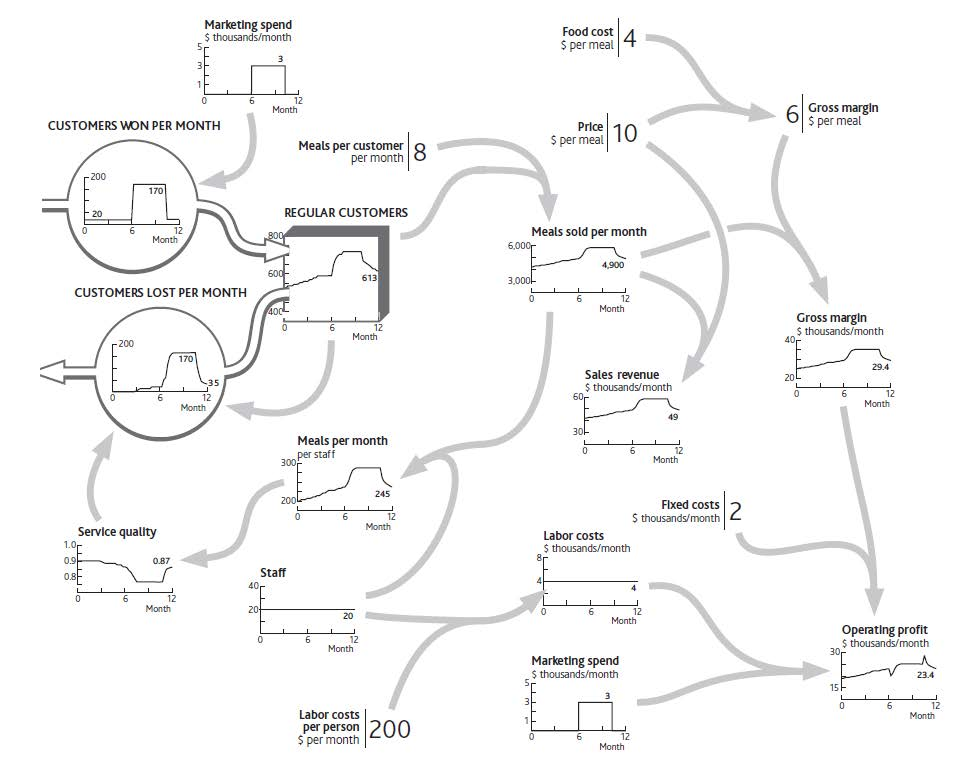
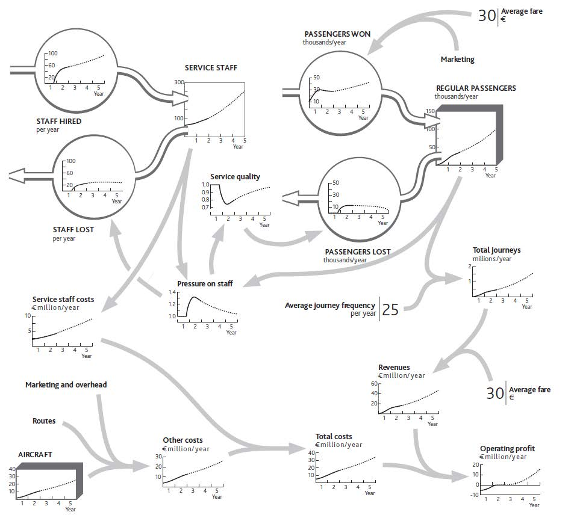
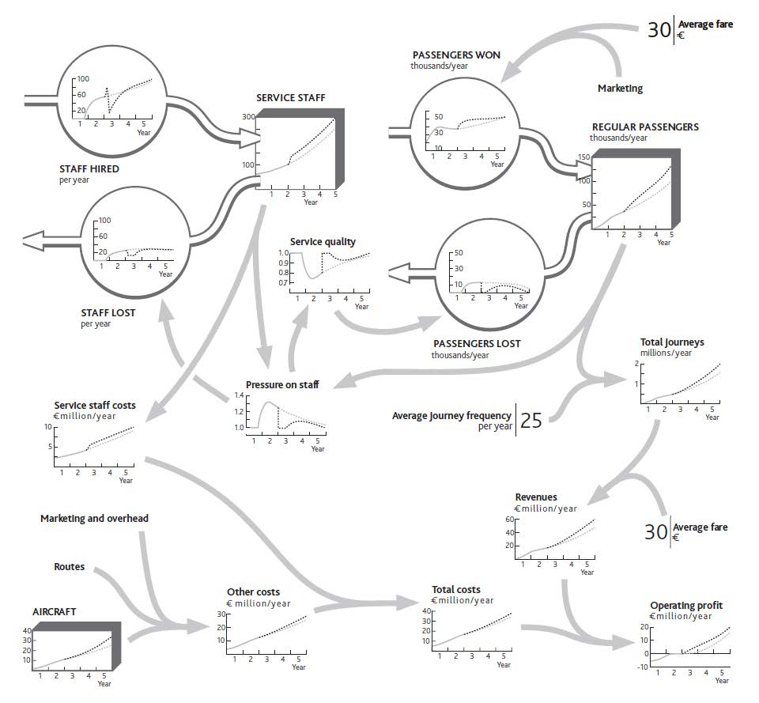

We now have everything we need to develop and use a complete picture of your organization’s performance. This chapter will show you the following:
Remember the strategy challenges that we highlighted in Chapter 1 "Performance Through Time"? These were
Now that you understand the way a system of resources works, you are in a position to answer these questions in detail.
Earlier chapters have given us all the elements we need to develop a complete picture of our business, together with the information that explains why it has performed as it has up to now. These pieces are as follows:
To illustrate these stages, let us go back to the performance of your restaurant that you wanted to understand before deciding what to do next. Start by pulling the pieces together.
The time chart of one or more performance measures, with scale and timing (Figure 1.4 "Restaurant Performance Example").
The list of likely resources involved. (Note: Not all of these may be needed to tackle a specific challenge. Subsequent stages will identify those that are involved.)
The immediate causes of that performance (Figure 2.1 "The Explanation for Restaurant Sales and Labor Costs").
The resources driving demand, supply, and performance (Figure 2.2 "Your Restaurant’s Resources and Operating Profits").
The flows of resources into, through, and out of the organization’s system (Figure 3.6 "The Separate Flows of Customers Into and Out of Your Regular Customer Group").
The immediate causes for these flows to be running at the rate they are (a) why customers are being won (Figure 4.1 "Marketing Decisions Change the Inflow of Customers" shows the “normal” rate at which new customers arrive, plus those won from your marketing spending). (b) why customers are being lost (extended version of Figure 4.8 "The History of Service Quality and Customer Losses").
The dependence of each flow on existing resource levels (Figure 4.9 "Why Service Quality Suffered Then Recovered").
Figure 5.1 "The Strategic Architecture of Your Restaurant, With Data Explaining Recent Performance" is far from a complete architecture of your restaurant. It does not, for example, include certain resources, such as the menu or the seating capacity. Nor does it include potentially important factors that could drive changes in performance, such as price or competitors’ actions. The best approach is to include as much of the architecture as is necessary to create a plausible explanation of performance over time.
This needs great care!
Figure 5.1 The Strategic Architecture of Your Restaurant, With Data Explaining Recent Performance
These elements connect together to provide a complete explanation of recent performance and future challenges (Figure 5.1 "The Strategic Architecture of Your Restaurant, With Data Explaining Recent Performance").
A strategic architectureA tool used to resolve specific issues and guide the performance of an entire strategy. The strategic architecture should be focused on flow rates. provides a living reference for a firm’s structure and behavior. A critical part of top management’s job is to understand that structure, ensure that it is well designed, and steer its performance (Keough & Doman, 1992). Diagrams such as Figure 5.1 "The Strategic Architecture of Your Restaurant, With Data Explaining Recent Performance" are a common way of understanding and controlling complex systems. Even if you have never visited a chemicals plant or power station, flown an aircraft, or managed a rail network, you will have seen pictures of “control panels” that give management continuous information on the states of key variables. Their control panels look like the system they are managing.
We are trying to achieve the same analog-style diagram for your organization. To make best use of such a picture, you need to have it available and accessible to your whole team, perhaps on a large wallboard in the main meeting room. It may be helpful to have other diagrams in other meeting rooms to show more detail about the architecture of key parts of the system: a diagram of customer segment details in the marketing area, a diagram of people flows in the human resource (HR) department, and so on.
You may not get it right the first time. However, any inaccuracies will become apparent as you learn whether the relationships you have sketched between the connected data provide a good explanation of what is happening. If not, you can readily identify what may be missing or inaccurate and revise the architecture diagram accordingly.
A well-developed strategic architecture is a powerful tool, both to resolve specific issues and to guide the performance of the entire enterprise strategy. To understand this, consider a rather more extensive example than your restaurant: the architecture of a low-fare airline (similar to Ryanair, which is featured in Chapter 2 "Resources: Vital Drivers of Performance"). Figure 5.2 "Growth Slowdown for a Low-Fare Airline" shows the first 2 years of operation, followed by a possible 3-year future, denoted by the dotted portion of the lines.
Figure 5.2 Growth Slowdown for a Low-Fare Airline
The chart for aircraft in this example shows a smooth line, even though this resource comes in batches; operating 7.5 planes, as it seems you did at one point in year 2, does not make sense. Strictly, we should have a stepped chart over time for aircraft, with a jump to a new number each time a batch of ordered aircraft is received. But for a strategic view of what is happening you do not need to worry about this picky detail.
It looks complicated, but if you take it in sections, you can see how the stages come together:
Valuable insights can arise simply from the team activity involved in developing this picture, as it will typically prompt substantial debate and analysis. Two elements will ensure that insights are accurate and address the correct issues:
Figure 5.2 "Growth Slowdown for a Low-Fare Airline" goes further than explaining recent history. It sketches out the team’s best estimate of where performance is heading into the future. The dashed lines show the estimate that you and your team came up with about the way things are likely to develop if you continue with present policies.
You will continue running a tight operation. This means continuing to hire staff at a steady rate. They may be under pressure, and service quality may not be great, but the business is satisfactory, passengers and journeys are growing, and your company is profitable. You expect that by increasing staff numbers ahead of growth in passengers and journeys, you will gradually bring down the pressure on your staff. In time, service quality will recover enough to slow the loss of passengers and overall growth will pick up.
The strategic architecture you develop will enable your team to evaluate a range of possible future strategies—the final stage of the process. You again need an organized approach:
Let us work through an example. One of your colleagues believes that poor service quality is unacceptable: It risks building up a poor reputation among potential passengers, which could hurt future growth. This colleague feels you should immediately hire enough staff to remove the overload.
Together, your team works through what might happen (Figure 5.3 "Relieving Staff Pressure to Improve Service", heavy dotted lines). One risk in the proposed solution is that these newcomers will not know what they are doing at first, so they will be deployed on simple tasks, and hiring rates can be reduced for a while so they can acquire more skill. Your colleague feels that this simple step will immediately relieve some of the pressure and give your people the ability to improve service quality quickly—especially if you tell them that this is your plan!
Figure 5.3 Relieving Staff Pressure to Improve Service
You are reasonably confident that the improvements to workload and quality will materialize, so you estimate that passenger growth will accelerate once more, provided you continue adding routes and aircraft. You feel there is a small risk that this will again put staff under pressure some time during year 3. You resolve to keep track of this issue and revisit the hiring policy if it looks as though the problem is recurring.
The airline’s one-off hiring effort is just one example of a management response to improve performance. There are other common types of response, and it is important to look for and evaluate these in the right order, otherwise you risk undermining one fix by missing unintended consequences:
Many organizations focus on cost-effectively acquiring resources and building them but pay much less attention to keeping them. However, there is little advantage in trying to increase the stock of resources in the system if the organization simply loses them again. Too often, customers are won, only to be lost again by poor products or service; staff are hired and trained, only to leave again for any of a host of reasons; new brands are established, only to become uncompetitive as the excitement of the launch fades; distribution agreements are set up, but stall when the company proves unable to sustain the relationship. Of course, there may be situations where the organization has good reason to reduce resources deliberately: for example, cutting back on sales efforts as you progress toward fully exploiting a market opportunity.
Once you have ensured there are no leaks in your bath, you can think about filling it!
The development of one resource can be hampered by inadequacies in other resources. The team should therefore examine the strategic architecture, focusing on each resource in turn and ascertaining whether its own growth may cause imbalances that restrict its further progress. A valuable question to trigger insight is, “If we are successful in winning these customers (or finding these staff, or launching these products), what are all the things that could go wrong or get in the way?”
Only after steps 1 through 3 have been completed should you turn to the tempting task of finding reinforcing mechanisms to drive growth. By this point it should be safe to look for ways in which existing resources can be leveraged to drive their own growth or that of others. Can you, for example, leverage existing customers and your resulting reputation to drive faster acquisition of further new customers or to increase your ability to hire the best people?
In cases where resource limits and imbalances are serious, it may be impractical or take too long to grow, develop, or reduce the necessary resources. Instead, step changes may be appropriate. These may be limited to actions in a single part of the business or affect many resources simultaneously:
Although step solutions are hardly a new approach to improving an organization’s performance, a sound architecture of the situation will provide important safeguards for their implementation. Above all, the rest of the system needs to able to absorb the new or increased resource. It may be necessary to develop complementary resources, or at least start them on an increasing trajectory so that they quickly become able to cope with the influx. Without such precautions, the very solution itself may trigger some new resource losses that undermine your hoped-for improvement.
It is common, for example, for staff to resign after new people arrive. Losses may also arise among other resource categories: For example, inward licensing of new products may cause product development staff to become disillusioned and resign, and the opening of new direct customer relationships may cause dealers to defect to rivals.
A clear picture of the organization’s overall performance and underlying strategic architecture provides valuable insights into how decisions should be guided. The first observation is that using financial outcomes to guide decisions is likely to be hopeless. Clearly, the immediate consequences must make sense: You do not want to spend what you cannot afford, or price your product so high as to kill current sales or so low as to destroy margin. But this is not strategic control.
A simple principle guides how strategic decisions should be viewed: Strategic managementA process concerned with the key objectives of an organization, the use of its resources, and enhancing the organization's performance in its environments. Flow rates are key aspects of an organization's strategies. is all about flow rates!
To appreciate the implications of this view, think about how our airline team might set a rule of thumb for its marketing spending. Some of the possibilities from which to choose include:
However, marketing directly affects just two main items: the frequency with which existing passengers travel with your airline and the rate at which new passengers are won. Marketing is not the only factor driving these values, but these values are the only significant things being driven by marketing! These, then, should be the focus of the decision rule for marketing because they are closely coupled to the decision variable.
The further you move away from this principle, the more likely it becomes that your decision rule will cause serious problems. It is astonishing, for example, how many organizations stick to “percent of sales” ratios to decide their spending on everything from research and development (R&D) to marketing, training, and maintenance. Just think how this would work for your restaurant:
You become trapped in a cycle of decline. This makes no sense, and in practice, managers usually avoid such foolish consequences. But why start with a decision guide that makes no sense in the first place? Pressure from investors who may not understand the structure of the strategic architecture often does not help.
So which performance metricsMeasures of the difference between an organization's targeted and actual performance. guide decisions best? Many organizations now use some form of balanced scorecard: an integrated approach to performance measurement and management (Kaplan & Norton, 1996). This recognizes that financial factors alone provide inadequate targets and incentives and so adds measures relating to
Only if these additional factors are in good shape will the firm deliver strong financial performance. The balanced scorecard offers important advances over traditional reporting approaches in recognizing the interconnectedness within the business and the importance of measuring and managing “soft” issues. Increasing training of staff about products, for example, will improve sales effectiveness, which in turn will improve sales and margins.
There are limits, though, to the control that a balanced scorecard can achieve if it is not designed to take account of the dynamic interactions that run through the organization’s architecture. There are two particularly common failings:
Management techniques often fail or fall from favor not because they are wrong, but because they are not used properly. Superficial work, done in the hope of a quick fix, is a common culprit. The extensive effort required by many otherwise sound methods is often not sustained. As senior managers instruct their people to undertake one initiative after another, none is carried to fruition before the next is begun. Initiative overload is a common cause of poorly implemented strategies.
Strategy dynamics—the basis of the approach in this book—will not work either if badly applied. It is a powerful but demanding approach that needs to be done professionally and thoroughly if accurate findings and good managerial responses are to be obtained. However, it is not typically more time-consuming or analysis-intensive than many planning processes that organizations put themselves through. Indeed, it often eliminates much activity, data processing, and analysis that would otherwise have been carried out.
Who should do this work? You and your team. Continuing management of today’s dynamically complex organizations in today’s dynamically complex markets and environments is not intuitively easy. For this reason, beware of consultants. Though many excellent professionals can carry out all kinds of demanding analysis and give exceedingly sound advice, few have had a thorough education or training in dynamic analysis. This is a tricky skill, and amateurs will usually get it wrong. Moreover, the need to review your performance dynamics will never go away. You cannot subcontract strategic leadership and you cannot subcontract strategic understanding.
The action checklist for this topic was already outlined, so in summary:
Note that this short book can only provide a summary of how this approach works for some simple business examples. For more extensive guidance on more complex situations, see Warren (2008) and http://www.strategydynamics.com.